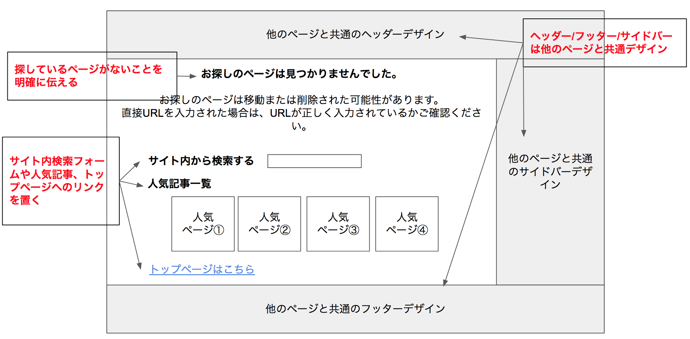
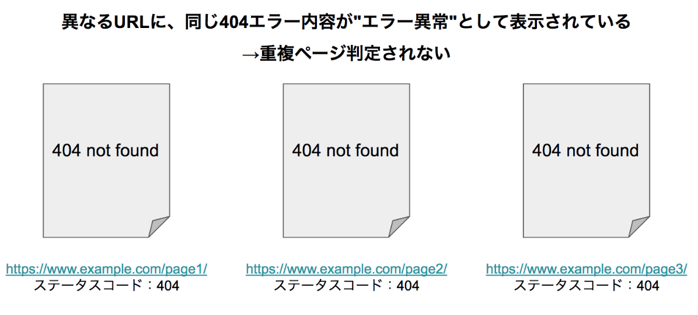
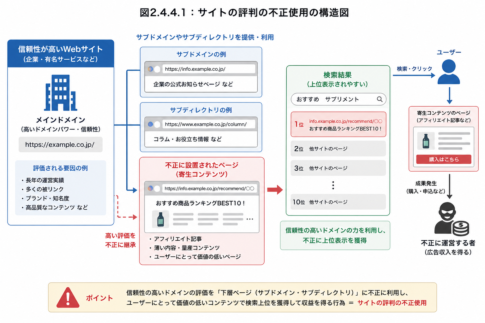
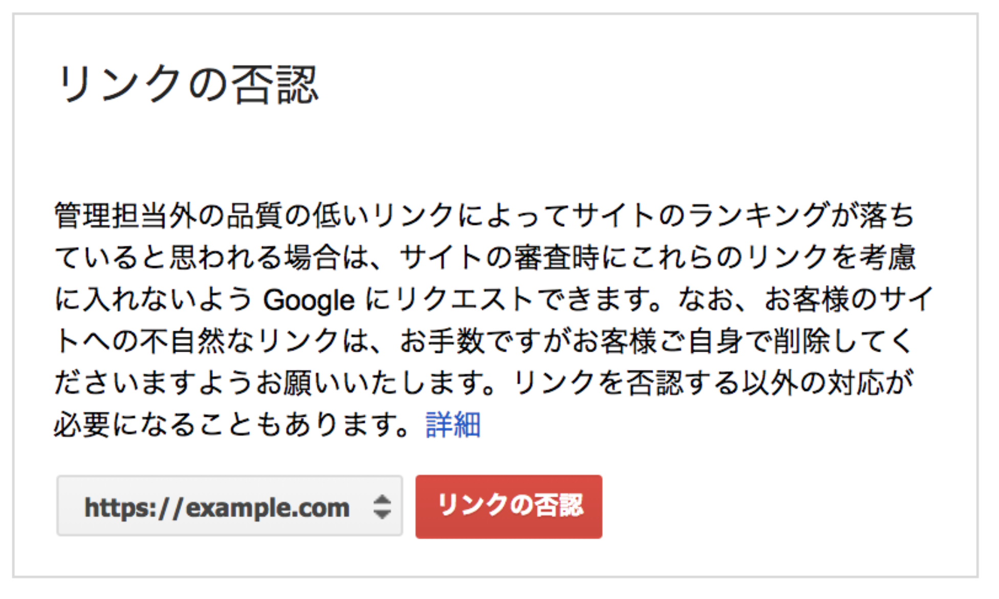

テクニカルSEO
基礎：HTML構造、1URL1コンテンツ、サイト構造：URL設計、内部リンク、クロール制御：robots.txt、サイトマップ、エラー・スパム対応、表示速度：ネットワーク／レンダリング／サーバー、Core Web Vitals、測定ツール、HTTPS
エラー対応とスパムへの対策
SEOでプラスの評価を積み上げる前提として、まずはマイナス評価につながる要因を取り除くことが重要です。本セクションではエラーへの対応とスパムへの対策の基本を扱います。
エラー対応では、まず「自サイトのエラー（内部エラー）」と「外部サイトへのリンク切れ（外部エラー）」を区別します。内部エラーは自社で解決可能ですが、外部サイトのエラー自体は解決できないため、リンクの変更・削除で対応します。
| ステータスコード | 意味 |
|---|---|
| 200 | 正常（OK） |
| 301 / 302 | 恒久的 / 一時的なリダイレクト |
| 401 / 403 | 認証が必要 / アクセス禁止 |
| 404 | ページが見つからない（Not Found） |
| 500 / 503 | サーバー内部エラー / サービス利用不可 |
ユーザーやGooglebotがリンクをたどって到達できるページでエラーが起きている場合は、修正が必須です。Search Consoleの[インデックス作成]→[ページ]で発生状況を確認できます。どうしても404を返さざるを得ない場合は、デフォルトのエラーページではなく、次のようなユーザーフレンドリーな404ページを用意することが推奨されています。
- 探しているページが見つからないことを、平易な言葉で明確に伝える
- サイトの他ページと同じデザイン（ナビゲーション含む）にする
- 人気記事やホームページへのリンクを設置する

独自の404ページを用意する際、システムによってはステータスコード200（正常）を返してしまう「ソフト404」と呼ばれる状態になることがあります。この場合、削除された記事などが重複コンテンツとして扱われてしまう可能性があるため、404エラーページであっても正しく404のステータスコードを返す必要があります。

続いてスパムへの対策です。Googleは2018年にSpamBrainという仕組みを導入し、より高度なスパム行為を検出できるようになっています。スパム行為は大きく3つに分類されます。
| 分類 | 関連アップデート | 代表例 |
|---|---|---|
| 価値の低いコンテンツ | パンダアップデート | コピーコンテンツ、自動生成コンテンツ、キーワードの乱用、広告のみのコンテンツ |
| 質の低い被リンク | ペンギンアップデート | リンクの売買、同一IP/テンプレートからの大量リンク |
| クローラへの偽装行為 | - | 隠しテキスト・隠しリンク、クローキング、不正なリダイレクト |
クローキング
ユーザーとクローラに対して、異なるコンテンツやURLを見せる行為。検索順位の操作やユーザーへの詐欺行為に使われるためペナルティ対象です。PC/モバイルを別URLで運用している場合に、対応するページが正しく1対1でリダイレクトされない「不正なモバイルリダイレクト」も同様に問題視されます。

被リンクに関しては、広告やスポンサー活動を目的としたリンクそのものが問題なのではなく、ランキング操作を目的としたリンクの売買が問題とされます。こうした関係性のあるリンクには、次のようなrel属性を付与してGoogleに関係性を伝える必要があります。
| rel属性 | 意味 |
|---|---|
| rel="sponsored" | 広告・スポンサー活動を目的としたリンク |
| rel="nofollow" | リンク先ページをクロールさせたくない場合 |
| rel="ugc" | ブログコメントやフォーラム投稿など、ユーザー生成コンテンツのリンク |
悪意ある第三者が意図的に低品質な被リンクを送り、対象サイトの評価を下げようとする行為を「逆SEO」と呼びます。過去から現在まで不正行為をしていなくても被害に遭う可能性があるため、Search Consoleで定期的に被リンク状況を確認することが推奨されます。質の低い被リンクが見つかり、自分で削除・修正できない場合の最終手段として、Search Consoleの「リンクの否認」機能が用意されています。

これらのスパム行為がGoogleに認識されると、Search Consoleの[手動による対策]レポートに検出され、検索結果から除外される可能性があります。仮に一時的に順位が上がったとしても、いずれペナルティを受けるリスクがあるため、スパム行為による成果は資産にはならないとされています。